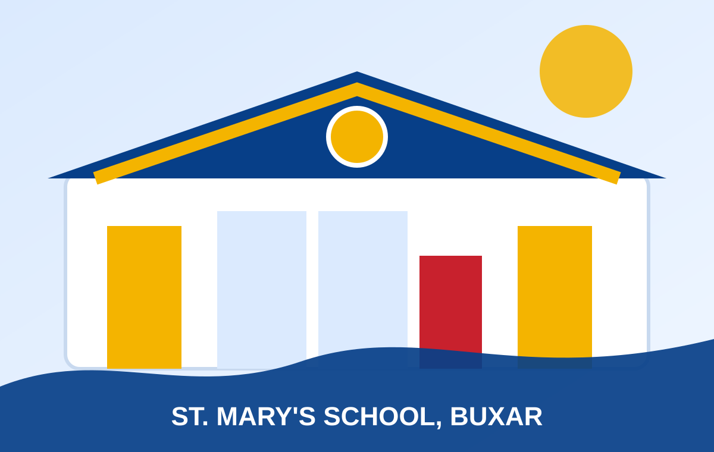

Our Vision Mission
Our vision is the formation of human person committed to God and country.
Our mission is to form the young as men and women of character, competence, conscience and compassion, committed to build a just society.
Welcome to St. Mary's School, English Medium, Buxar — a Catholic educational institution dedicated to character, competence, conscience, compassion and service to society.
Explore Our School Contact UsFormation of the human person committed to God and country.
Our vision is the formation of human person committed to God and country.
Our mission is to form the young as men and women of character, competence, conscience and compassion, committed to build a just society.
Christian formation of our community members through faith education reflected in word and action.
Creation of a society inspired by Gospel values of service in love, peace rooted in justice and fellowship based on equality.
St. Mary's School aims to form the young as men and women of character, competence, conscience and compassion committed to build a just society.
Paying heed to multiple intelligence, students are encouraged to discover and develop their own unique gifts.

We are delighted to introduce you to St. Mary's School, a premier educational institution in Buxar, permanently affiliated with the ICSE board. Our school has recently been upgraded to +2, offering students a seamless educational journey from kindergarten to higher secondary.
At St. Mary's, we strive to provide a holistic education that empowers our students to excel in all aspect of life.
Theme for 2025-2026: Sankalp Se Siddhi - Strive Towards Success.
Modern learning supported by discipline, leadership and holistic growth.

Our school boasts cutting-edge facilities, including VR set classes, AI robotics, and an advanced Computer Lab, where students can explore the latest technologies and develop their skills.
Our English Language Lab is designed to enhance language proficiency, while our well-stocked library provides a conducive environment for learning and academic growth.

We conduct various Olympiads and scholarship exams, including Maxtop exam and SNOT exam, to challenge our students and help them reach their full potential.
Our NCC Scouts and Guides program also instills discipline and leadership skills in our students. Under the visionary leadership of Dr. (HC) Fr. Dominic Amalan, our management is dedicated to providing the best possible education to our children.
We offer a range of clubs and activities that cater to diverse interests.
Students can join cricket, skating, badminton, basketball, and chess clubs.
We have a strong focus on music, with opportunities for vocal and instrumental training.
Students can participate in dance, art, and craft classes, as well as handwriting clubs.
French language classes broaden our students' linguistic horizons.
Proud milestones displayed on the primary website.
School library, laboratory and computer lab rules.
Students should keep in mind that “Reading makes a full man”. They should develop the habit of reading, systematically and thoughtfully.
Views: 118
Students must wear lab coat in the laboratory for chemistry practicals. Perfect silence in the laboratory is essential for concentration and successful scientific work.
Views: 547
Take off shoes before entering the Computer Lab and keep in the shoe rack. Wipe off feet at doormat before entering the Computer Lab.
Views: 466
Stay connected with school notices, assemblies, competitions and celebrations.
Updates from the school office can be highlighted here for parents and students.
Use this area for events, Olympiads, scholarship exams, NCC, Scouts and Guides programs.
St. Mary's School, Nai Bazar, Buxar-802101